自从「豆包工作」8月25日发布上线以来，本体和与之关联的豆包、飞书都在快速更新进化。很多人看了「豆包工作」的界面都在说：这不就是豆包嘛。
对，很像。但又不一样。
身边很多平时把豆包当主力AI助手的同事、朋友也来问我，它俩到底有啥不一样？要不要下载安装「豆包工作」？
今天就用一篇文章，用「最简单、最直接、最不绕弯子」的方式，把「豆包工作」的实测体验和最近一周使用最新版豆包的真实任务体验分享给你，看完就能有自己的答案。
「豆包工作」≠豆包「工作」模式
第一次打开「豆包工作」，我和很多人反应一样——这不就是豆包换了个名字？
可当开始用「豆包工作」跑任务，才发现不能直接把它和豆包里的「工作」模式划等号，也不是豆包换了个名字那么简单。
相同的50%
选择使用豆包账号登录，「豆包工作」拥有豆包工作模式下的全部能力。包括项目任务、对话双向实时同步，内置的技能、连接器、伙伴全部都一样。这个状态下的「豆包工作」95%等于豆包的「工作」模式，包括上传的图片、文件，和任务产生新的图片、文件可以通过云盘实时同步。
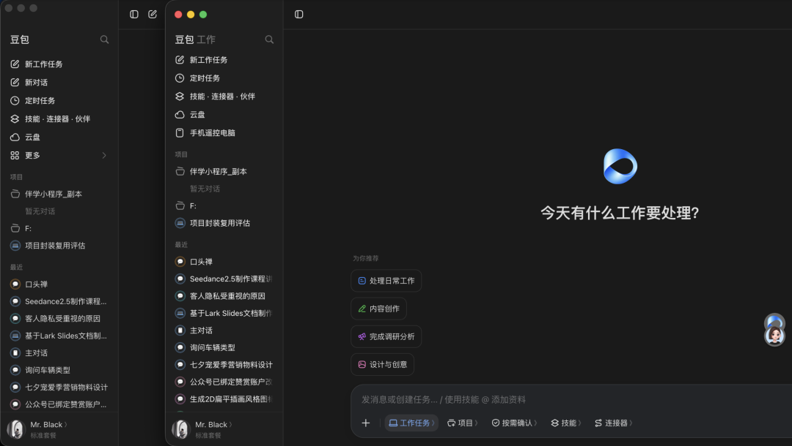
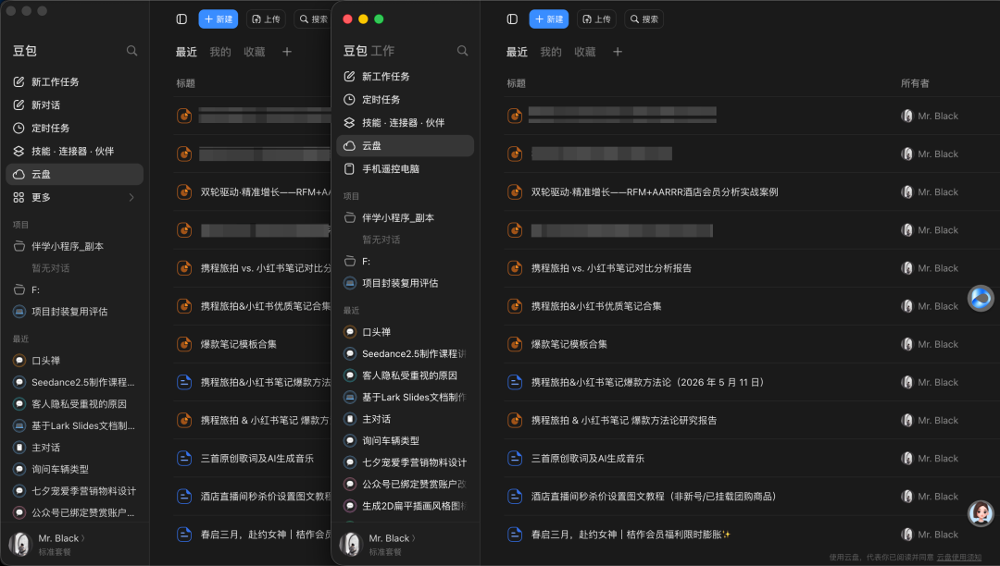
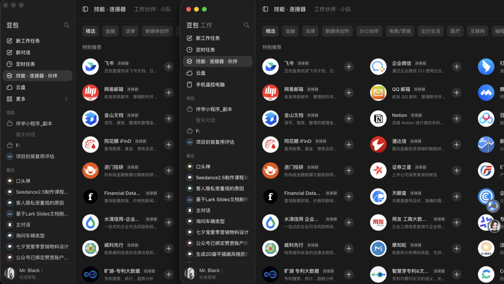
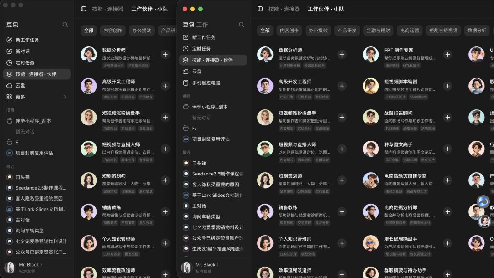
不同的20%
「豆包工作」比豆包更加专注于「工作」。从界面功能上看，「豆包工作」没有豆包的「对话」模式，更加专注于工作任务本身，而豆包则可以在「工作」之余，通过「对话」提供一定的情绪价值，实现劳逸结合。
「豆包工作」比豆包的「工作能力」更强、更全面。「豆包工作」可以根据项目、任务类型选择任务环境是本地电脑还是云电脑，可以根据任务类型、任务要求选择大模型，可以手动选择任务审批权限。选择大模型、审批权限这两个功能豆包没有，豆包的任务环境不能选择，默认云端。
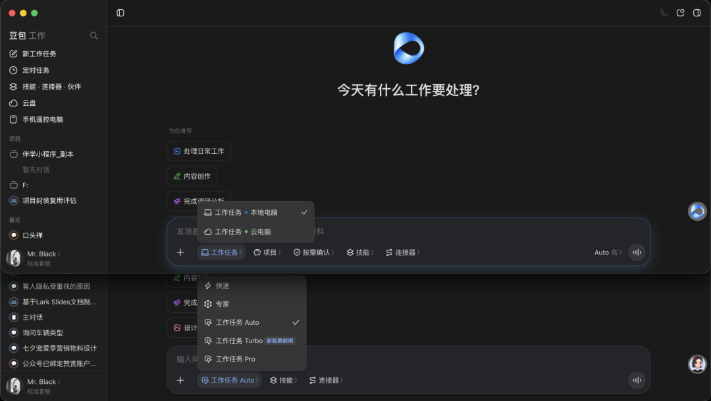
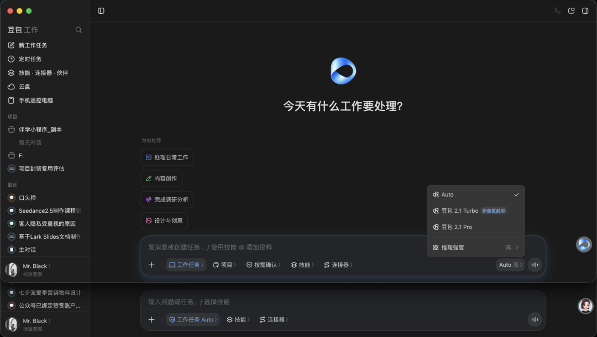
到这里，如果你平时用AI更多是辅助办公，完成一些信息搜索、数据整理、写文案、生成文档、PPT这种强度相对比较轻的工作，「豆包工作」和最新版豆包用起来体感上不会有太大差别，豆包完全够用，甚至用豆包完全免费、不需要额外使用额度的「对话」模式就可以覆盖绝大多数简单的、最轻量度的AI辅助办公任务。
如果你使用AI的需求是简单的辅助办公，完成一些轻量度的工作，并且公司不需要用飞书办公，就没什么必要重新下载安装「豆包工作」，豆包就已经够用了。
细心的朋友可能已经发现，上面总结的「豆包工作」和豆包的相同和不同加起来只有70%。
剩下30%的不同在飞书，而这30%和飞书办公体系深度绑定融合的部分，对于不用飞书日常办公的朋友，也有很多值得探索的内容。
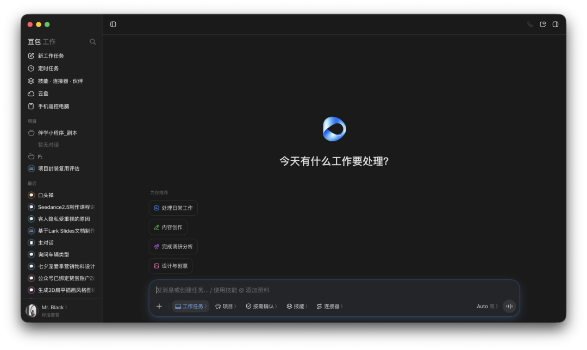
（使用豆包账户登录后界面⬆️）
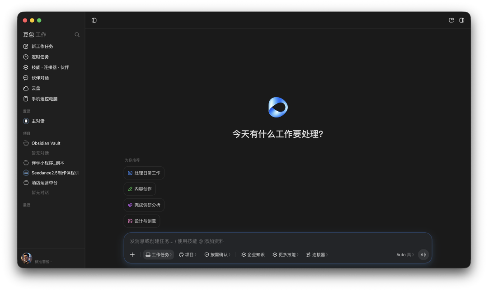
（使用飞书账号登录后界面⬆️）
使用飞书账号登录的「豆包工作」，界面上和豆包登录的区别有两点：任务信息互通和伙伴对话。
任务信息互通。
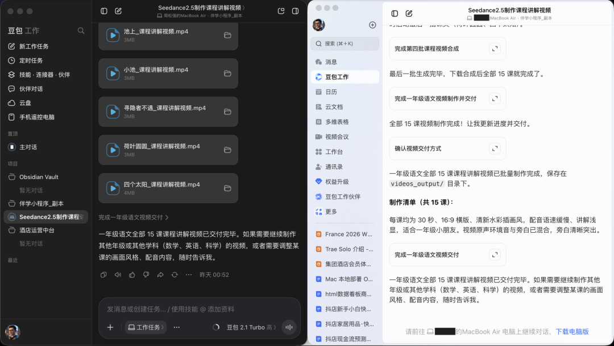
伙伴对话。
这里的伙伴对话和「技能·连接器·伙伴」里的「伙伴」用法不太一样。除了可以单独给「伙伴市场」召唤的某一个伙伴指派任务，还可以在遇到多环节的复杂任务时把多个伙伴组成小队共同完成任务。
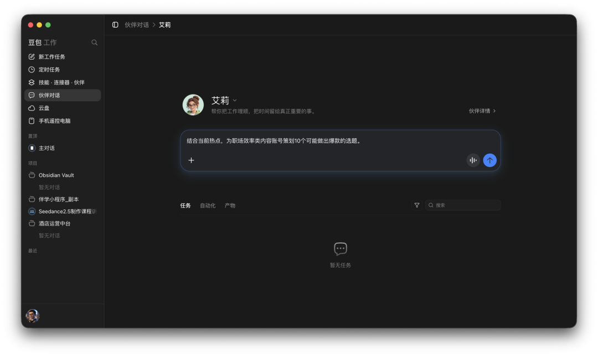
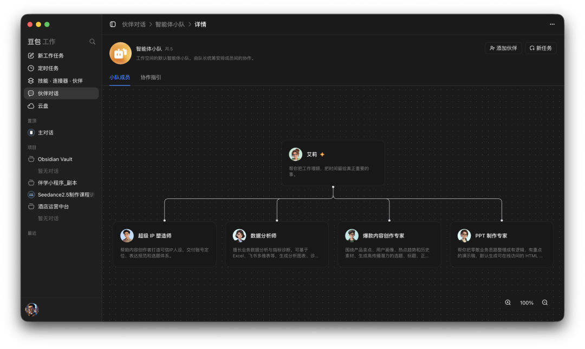
用过WorkBuddy「专家」的看到这里一定会非常熟悉，但对比WorkBuddy的「专家团队」按照场景和工作流提前选好不同的专家组成固定的团队不同，这里的「伙伴小队」选择把伙伴组合、协调规则这些更大自由度给到用户，让用户根据自己当下的具体场景来定制。
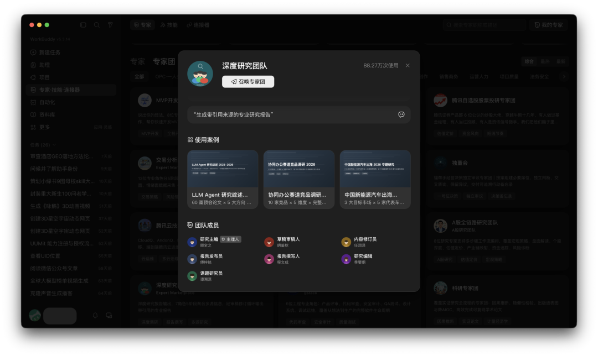
当然，更大的自由度对应的是对具体场景下解决问题的专业能力更高的要求。孰优孰劣就见仁见智了。
我的观点是：豆包工作的伙伴小队在具体业务定制场景和需求上有更大的空间和潜力，不管是公司团队自用，还是创业者，都有更多事情可做。
最后总结一下：
「豆包工作」不是豆包的升级版，也不能简单和豆包的「工作」模式划等号，我的理解：「豆包工作」是字节把原本分散在豆包、飞书、TRAE、扣子几个产品中自家的AI能力、资源重新整合，打造的更加专注于办公场景的agent。
如果你平时用AI更多是自己用来辅助办公，完成轻量的工作任务，或者有特殊的业务场景、工作流需要定制AI自动化工作流，如果是我，「豆包工作」可以作为备选项，毕竟才刚刚上线，功能版本还在高速迭代。
话说回来，截止到发文，「豆包工作」发布上线满打满算也才不到48小时，现在看到版本只是初始形态，成熟形态长什么样犹未可知，现在下什么结论都为时尚早。
但从飞书里的「豆包工作伙伴」来看，「豆包工作」本体后续大概率会把TRAEWork里的Code模式加进来。
拭目以待。
我是平野先生，关注我，分享真实的使用体验和踩坑记录。